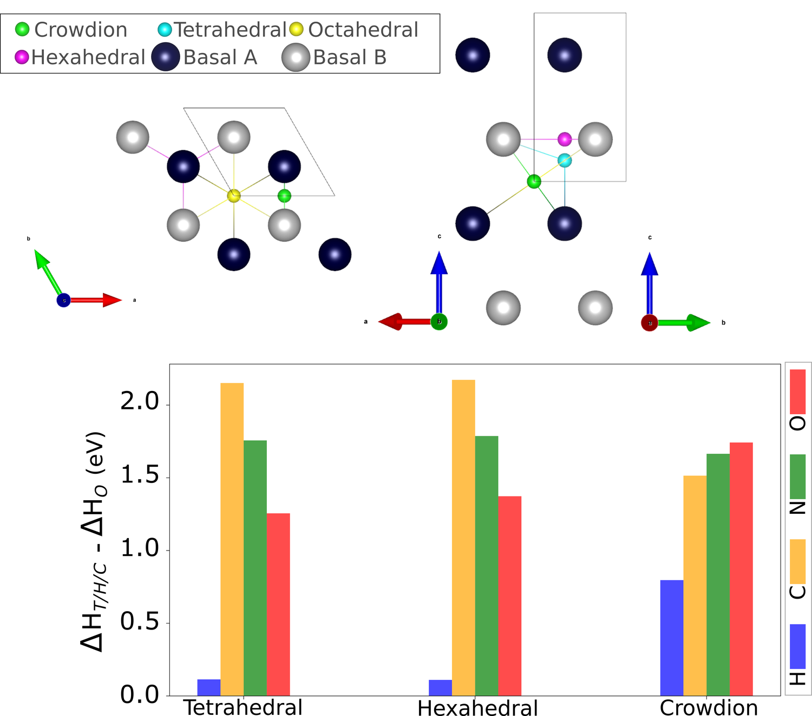
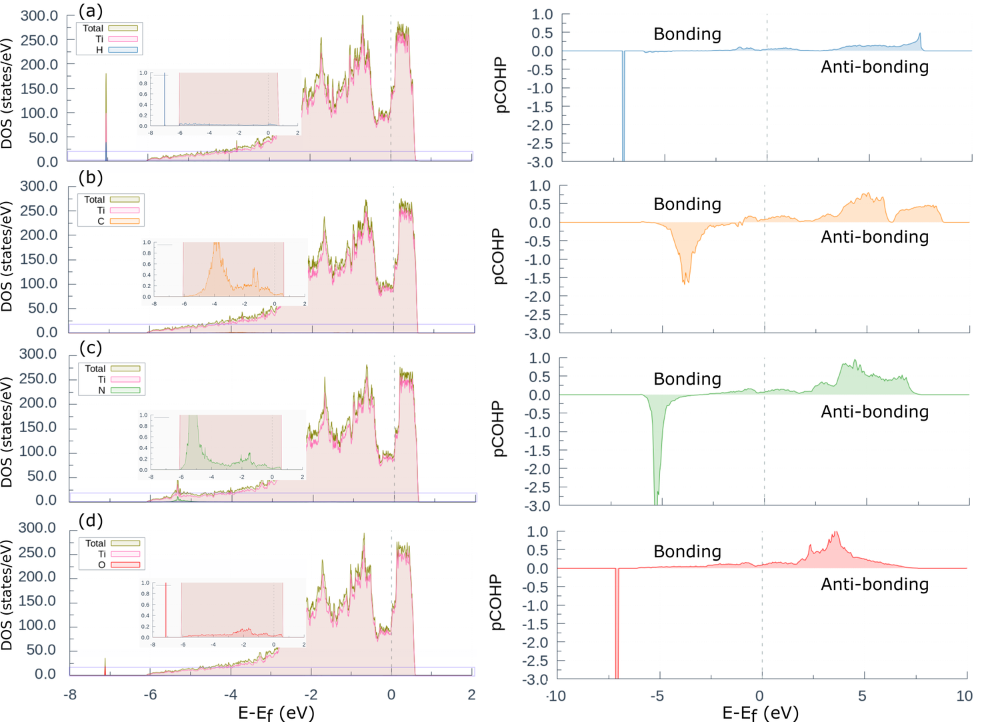
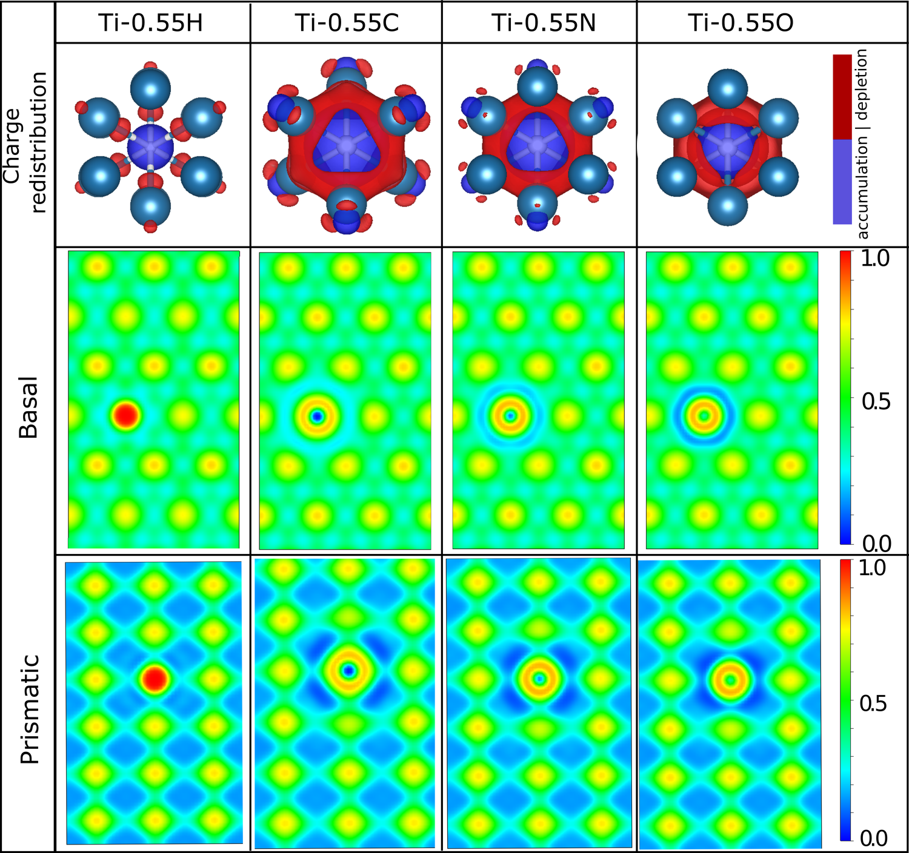
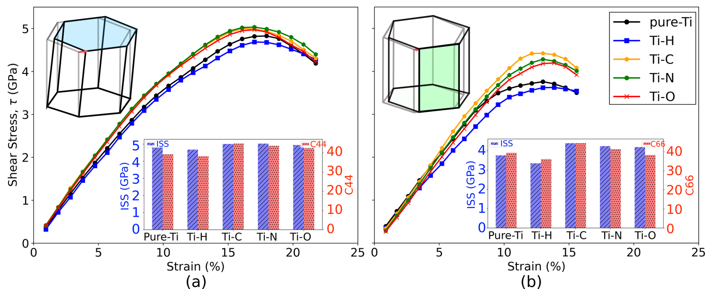
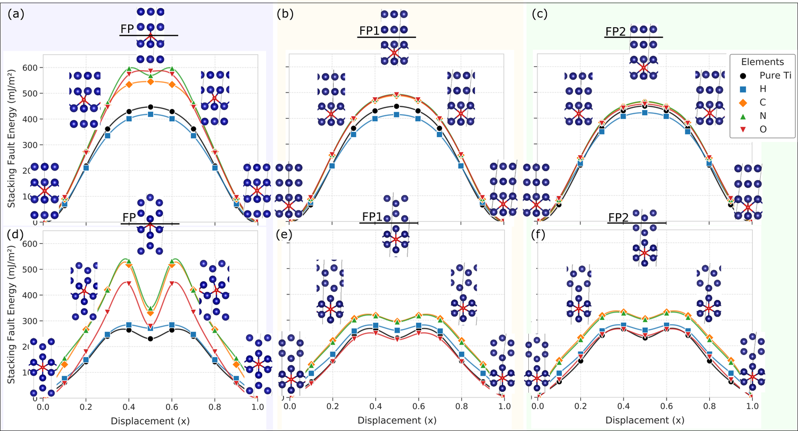
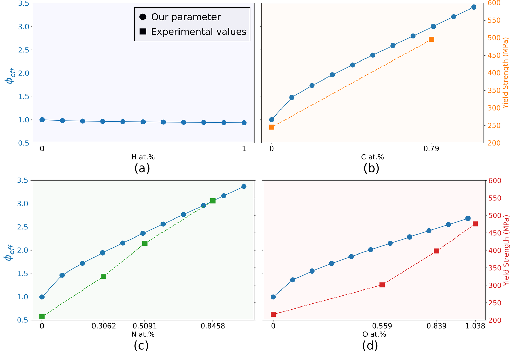
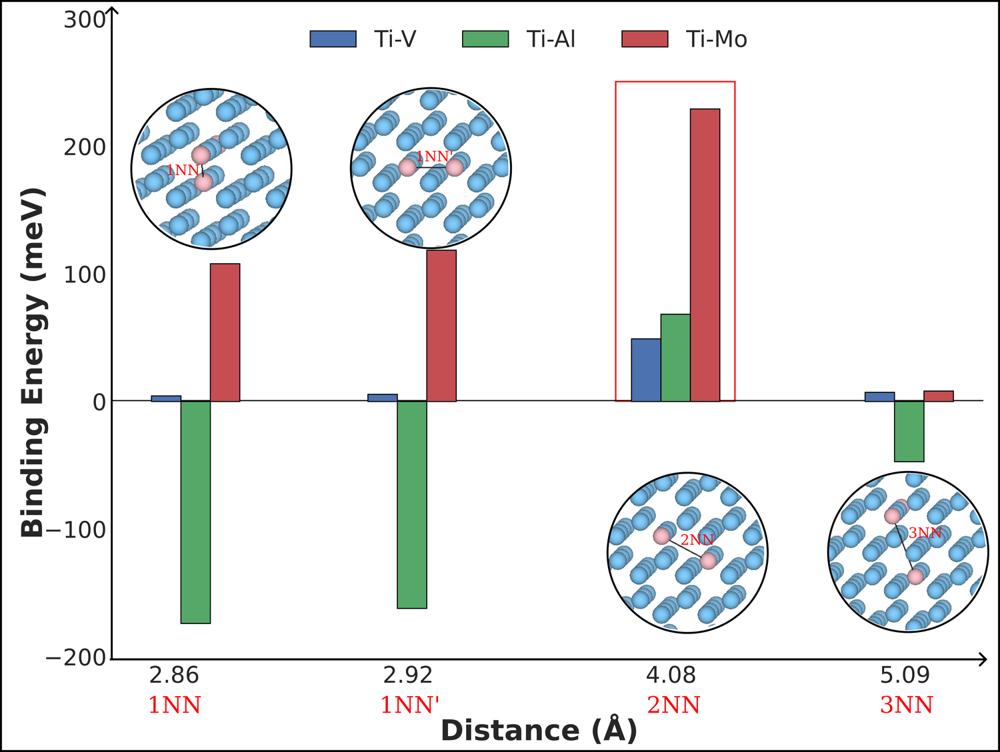
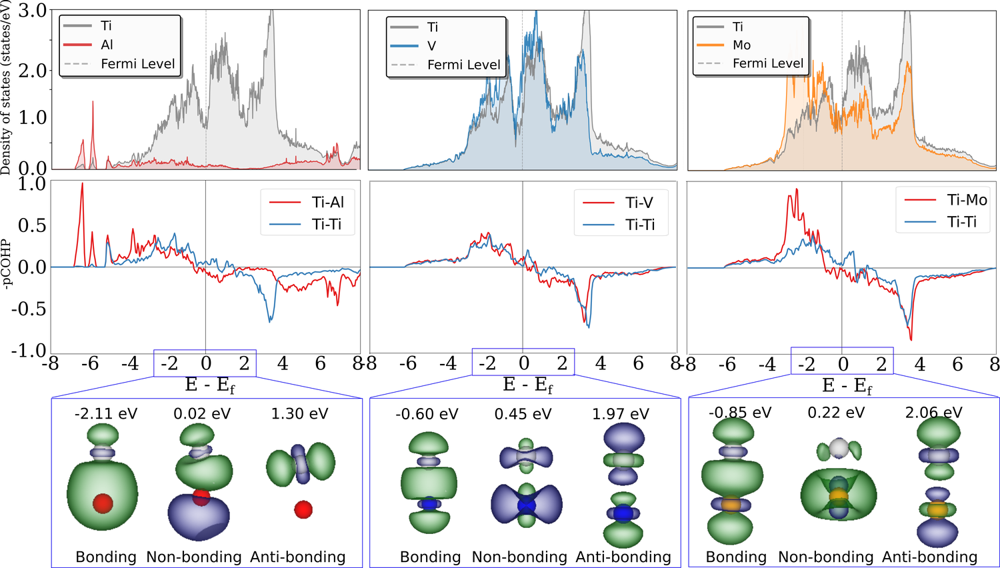
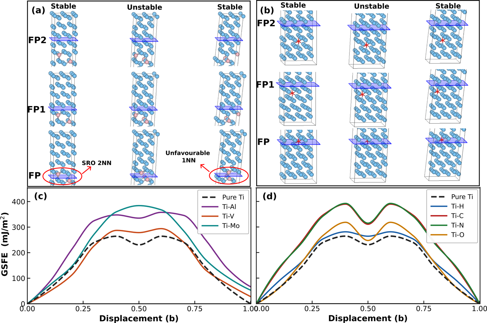
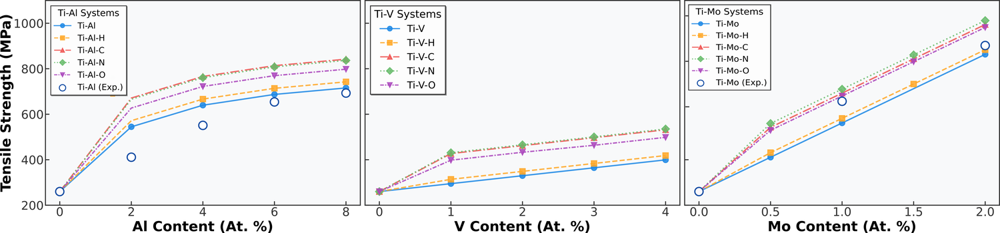

Titanium has a strange sensitivity. You can take a perfectly good ingot and ruin it — or transform it — with a few hundred parts per million of oxygen or carbon. Aerospace suppliers grade titanium almost entirely by these invisible interstitial atoms. So the very first question I asked in my PhD was disarmingly simple: if a carbon atom strengthens titanium more than a hydrogen atom does, why? And could I see that answer in the electrons, before ever lifting a hammer?
The honest motivation was frustration. The textbook way to predict interstitial strengthening is to fit constants to experiments — useful, but circular. It tells you that carbon is potent, not why, and it can’t predict a system nobody has measured yet. I wanted a number that came straight out of quantum mechanics and still landed on the experimental yield strength.
Where does an interstitial sit?
Before strength, geometry. A light atom in HCP titanium has a choice of holes to occupy — octahedral, tetrahedral, hexahedral, crowdion. I computed the enthalpy of mixing for every interstitial in every site. Oxygen, nitrogen and carbon all settle into the octahedral site; hydrogen, the odd one out, prefers the tetrahedral pocket. That single fact — where the atom lives — turns out to set everything that follows.

Reading the bond directly: ICOHP
Here is the move the whole thesis rests on. Using LOBSTER, I projected the DFT wavefunctions back onto pairs of atoms and integrated the crystal-orbital Hamilton population — ICOHP — which is, quite literally, the strength of a single bond in energy units. A Ti–Ti bond sits at −0.76 eV. Add the interstitials and the contrast is dramatic.
The bonding picture from the projected density of states and pCOHP makes the mechanism visual: carbon, nitrogen and oxygen pour states into deep bonding levels well below the Fermi energy, while hydrogen barely perturbs the lattice. You can see exactly which orbitals are doing the gluing.


From bonds to slip resistance
A bond strength is only interesting if it changes how the metal deforms. So I pushed the lattice — computing ideal shear strength and the generalized stacking-fault energy (GSFE), the energy barrier a dislocation has to climb to glide. The interstitials raise that barrier most when they sit right on the fault plane, and the effect fades as you move them away. The strengthening is local, and it tracks the bonding hierarchy exactly.


The descriptor: Φeff
All of this — site preference, bond strength, fault barriers — I folded into one quantity. Φeff is built from the ICOHP of the Ti–interstitial bond relative to Ti–Ti, weighted by how the solute sits on the slip plane. It has no fitting parameters. It is the closest thing in this thesis to a punchline.
When I plotted Φeff against the measured yield strength, the points fell on a line. No fitting. Electrons in, strength out.

Part II — when atoms have company: short-range order
A real titanium alloy is never just titanium plus one interstitial. There are substitutional elements too — aluminium, vanadium, molybdenum — and they are not randomly scattered. They prefer certain neighbour distances, an effect called short-range order (SRO). In the second part of this chapter (now under review) I asked whether the same bonding language still works once the lattice gets crowded.

And the bonding hierarchy held. The same ICOHP that ranked the interstitials now ranks the substitutionals (Ti–Mo > Ti–Al > Ti–V), and it maps cleanly onto how each one raises the stacking-fault barrier. When I combined substitutionals and interstitials into ternary systems, the interstitial bonds actually got stronger — the alloy chemistry and the interstitial strengthening reinforce one another.



Why it matters for the rest of the journey
Chapter 1 established the grammar I use for everything afterwards: the integrated bond strength, ICOHP, is a currency I can spend at any scale. Here it bought me a strength predictor. In the next chapter it buys something different — not how strong a bond is, but which direction it points, and therefore which way the whole crystal chooses to slip.